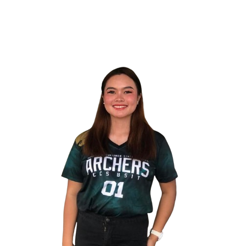

About Me
Hello! My name is Trisha Ann Satina, and I am a 2nd-year college student pursuing a degree in Information Technology.
As an IT student, I have a passion for technology and its ability to solve real-world problems. I enjoy learning about programming languages, web development, and the latest trends in the tech industry. In addition to my studies, I love exploring new software and tools that can help me enhance my skills.
When I’m not studying or coding, you can find me reading tech blogs, experimenting with new recipes in the kitchen, or spending time with friends and family. I believe in lifelong learning and strive to improve my knowledge and skills in every way I can.
This blog is a space for me to share my thoughts, experiences, and projects as I navigate through college and the world of technology. I hope you find the content here insightful and engaging!